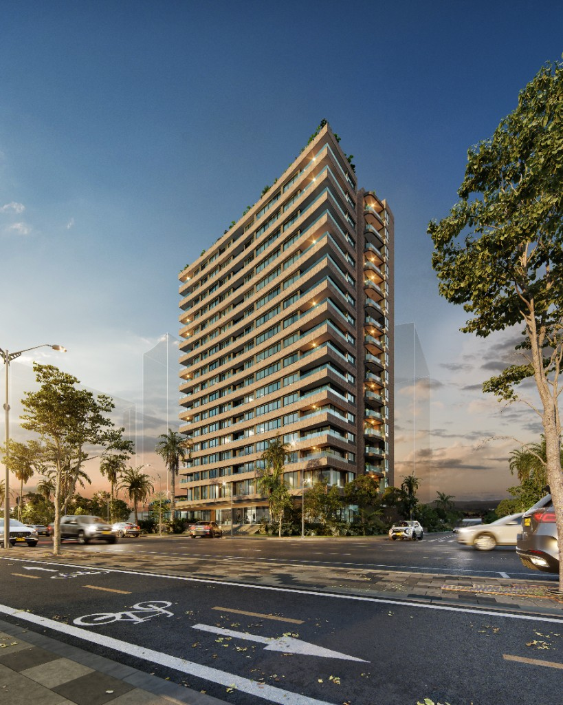
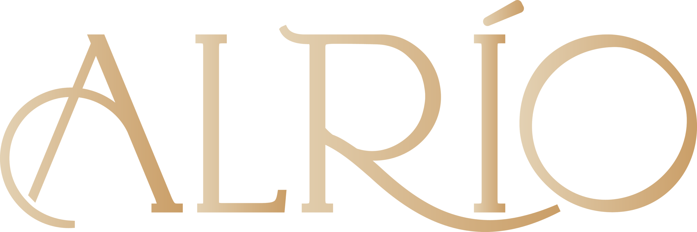
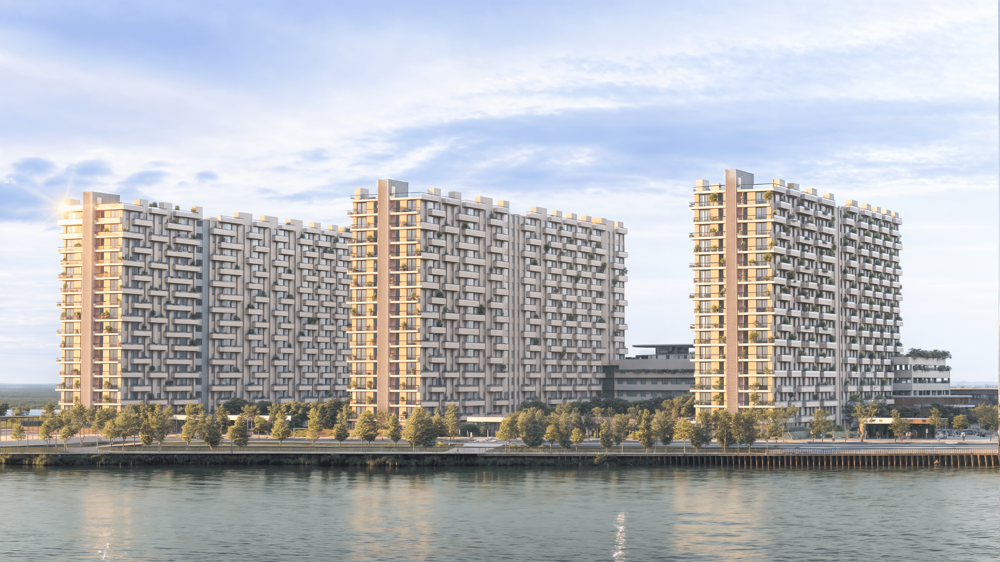

Una nueva ciudad se levanta junto al Gran Malecón
La Ciudad del Río se alza junto al Gran Malecón, un espacio público de primer nivel premiado nacional e internacionalmente, que ha recibido más de 25 millones de turistas desde el 2017.
GRAN MALECÓN DEL RÍO
Barranquilla mira al río Magdalena con un ambicioso proyecto de renovación urbana

Barranquilla · Gran Malecón del Río

APARTAMENTOSMUY PRONTO


La ciudad avanza en la transformación de su entorno natural con proyectos clave que revitalizan su conexión con el mar y el río Magdalena.


Mantente al día con las últimas noticias sobre Ciudad del Río y el desarrollo inmobiliario de Barranquilla.
Descubre las últimas actualizaciones y desarrollos del proyecto Ciudad del Río en Barranquilla, el ambicioso plan de renovación urbana que está transformando la ciudad.
Ver video completo
Análisis especializado sobre el boom inmobiliario en Barranquilla y cómo los proyectos cerca al río Magdalena están redefiniendo el mercado de vivienda en la ciudad.
Leer artículo completoLa Ciudad del Río se alza junto al Gran Malecón, un espacio público de primer nivel premiado nacional e internacionalmente, que ha recibido más de 25 millones de turistas desde el 2017.
.png)
La Ciudad del Río es un ambicioso plan de renovación urbana en Barranquilla que transformará la manera en que la ciudad se relaciona con el río Magdalena.

Mantente informado sobre las últimas novedades y oportunidades de inversión en Ciudad del Río y el Gran Malecón de Barranquilla.
El Gran Malecón de Barranquilla se ha convertido en el ícono urbano más importante de la ciudad...
Leer más
Barranquilla vive un renacer urbano frente al río Magdalena...
Leer másExplora la distribución y disponibilidad de lotes dentro del plan maestro de Ciudad del Río a través de nuestro mapa interactivo.
Desarrollos exclusivos que redefinen la forma de vivir e invertir frente al río Magdalena, donde la naturaleza y la modernidad se encuentran para ofrecerte oportunidades únicas.

Exclusivo desarrollo residencial frente al Gran Malecón donde la naturaleza y la modernidad se encuentran.
Ver Proyecto
Desarrollo residencial frente al río Magdalena con arquitectura moderna, amenidades de primer nivel y conexión directa con el Gran Malecón.
Regístrate aquíPrimer proyecto residencial exclusivo frente al río Magdalena. Regístrate para recibir información de lanzamiento.
Regístrate aquíDesde 1998 desarrollando proyectos de Infraestructura civil e inmobiliaria en todo el territorio nacional. Es la constructora de Vive Río en consorcio.
Enfocada en crear comunidades inteligentes y sostenibles, ha desarrollado proyectos exitosos, como Vive Río, desde su comercialización hasta su gerencia comercial.
Especializados en la promotoría de proyectos inmobiliarios y urbanos se ha enfocado en promover el desarrollo junto al Gran Malecón.
Regístrate y sé de los primeros en recibir información exclusiva sobre CIUDAD DEL RÍO.